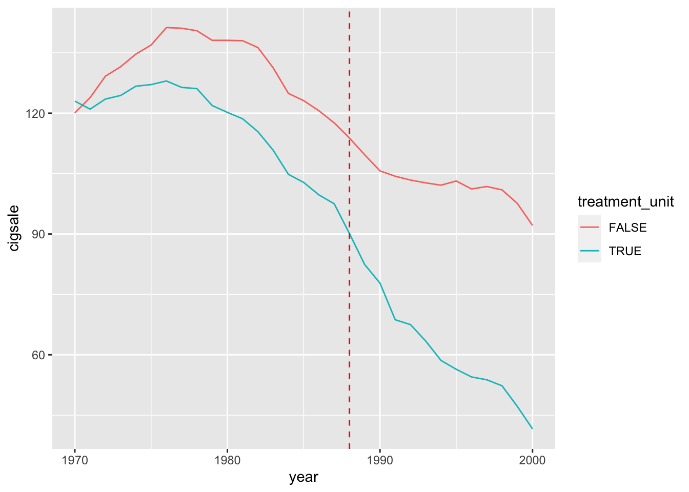
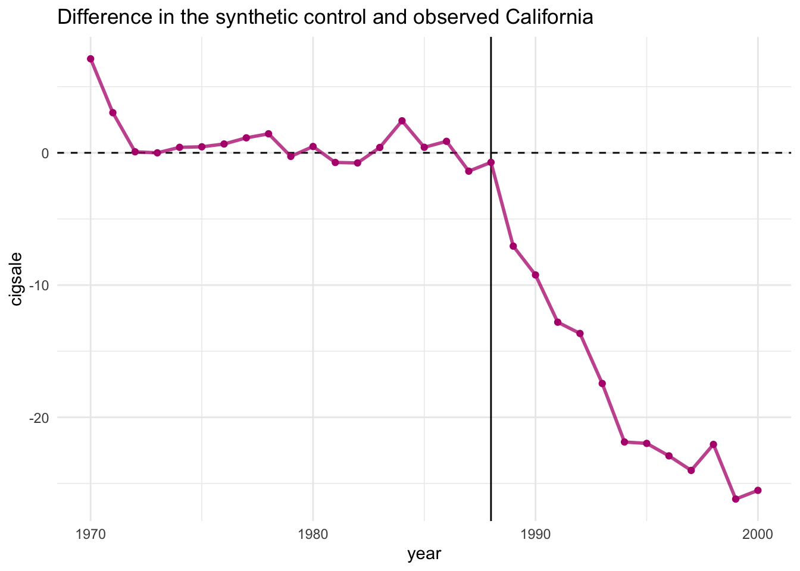
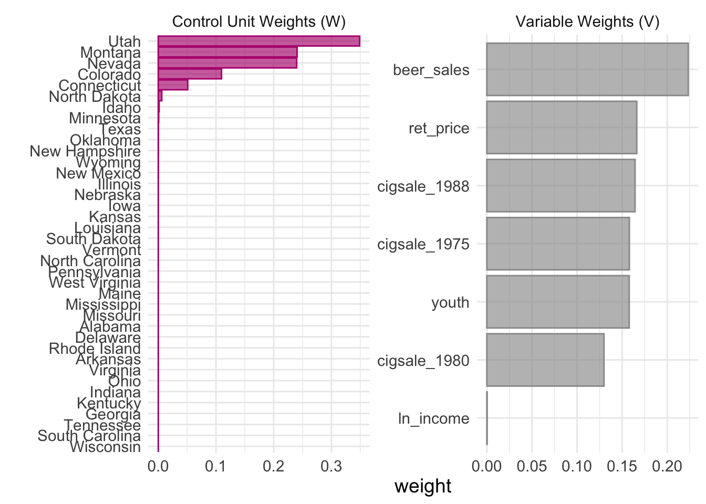
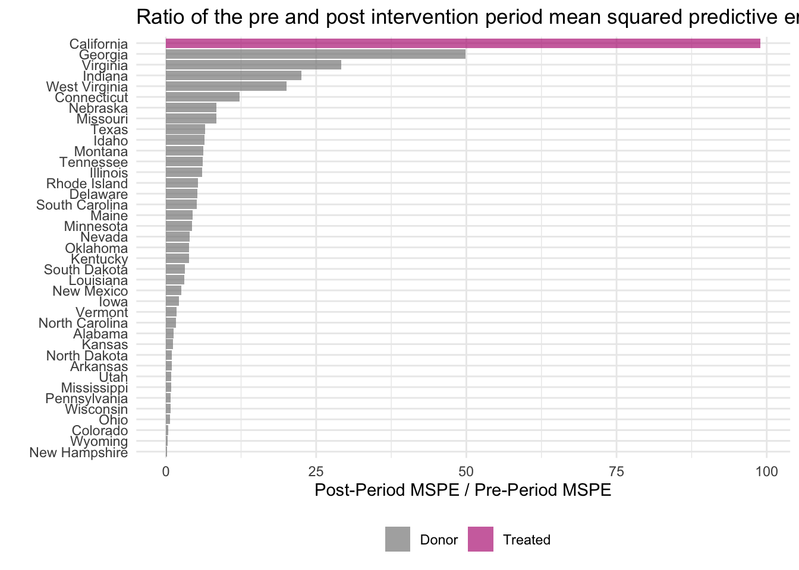
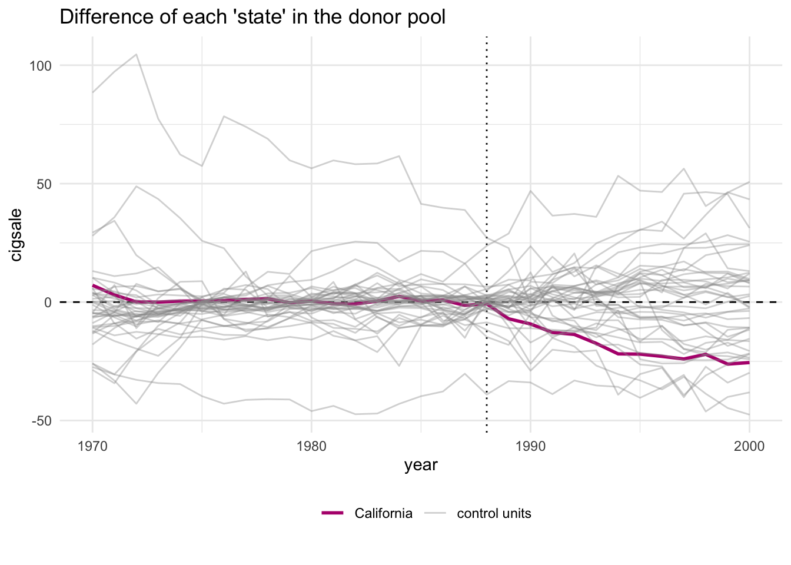
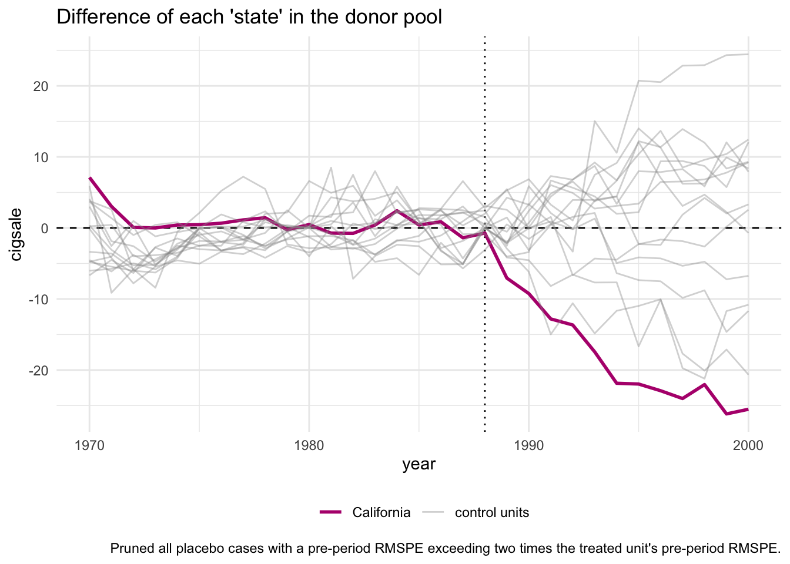

library('tidysynth')11 Синтетический контроль
11.1 Напоминание теории
in progress…
11.2 Пример
Абади, Даймонд и Хайнмюллер (2010) использовали метод синтетического контроля, чтобы оценить влияние от реализации проекта под названием Proposition 99.
В 1988 году Калифорния приняла комплексное законодательство по борьбе против табака под названием Proposition 99. Proposition 99 увеличило налоги на сигареты на 0,25 доллара за пачку, стимулировало принятие постановлений о чистоте воздуха по всему штату, финансировало кампании по борьбе с курением в средствах массовой информации, направляло налоговые поступления в бюджеты здравоохранения и борьбы с курением. и зарабатывал более 100 миллионов долларов в год на антитабачных проектах.
Для оценки эффекта методом синтетического контроля нам понадобится пакет tidysynth
и набор данных smoking из этого же пакета.
data("smoking")
smoking %>% dplyr::glimpse()Rows: 1,209
Columns: 7
$ state <chr> "Rhode Island", "Tennessee", "Indiana", "Nevada", "Louisiana…
$ year <dbl> 1970, 1970, 1970, 1970, 1970, 1970, 1970, 1970, 1970, 1970, …
$ cigsale <dbl> 123.9, 99.8, 134.6, 189.5, 115.9, 108.4, 265.7, 93.8, 100.3,…
$ lnincome <dbl> NA, NA, NA, NA, NA, NA, NA, NA, NA, NA, NA, NA, NA, NA, NA, …
$ beer <dbl> NA, NA, NA, NA, NA, NA, NA, NA, NA, NA, NA, NA, NA, NA, NA, …
$ age15to24 <dbl> 0.1831579, 0.1780438, 0.1765159, 0.1615542, 0.1851852, 0.175…
$ retprice <dbl> 39.3, 39.9, 30.6, 38.9, 34.3, 38.4, 31.4, 37.3, 36.7, 28.8, …В набор данных входят следующие переменные:
- state – штат США
- year – год
- cigsale - продажи сигарет на душу населения
- lnincome - логарифм ВВП на душу населения
- beer - потребление пива на душу населения
- age15to24 - доля населения в возрасте 15–24 лет
- retprice - розничная цена на сигареты
Мы будем считать эффект на переменную cigsale.
11.2.1 Предварительный анализ данных
Для начала посмотрим как изменялись продажи сигарет в Калифорнии и в других шатах, где не было изменения законодательства.
Для этого нам сначала нужно усреднить значение продаж по штатам, где не было изменения законодательства.
library('dplyr')trend <- smoking %>%
mutate(treatment_unit = state == "California") %>%
group_by(year, treatment_unit) %>%
summarise(cigsale = mean(cigsale))Теперь построим график
library('ggplot2')ggplot(trend, aes(x = year, y = cigsale, color = treatment_unit)) +
geom_line() +
geom_vline(xintercept = 1988, color = "red", linetype = "dashed")
На рисунке показаны изменения в продажах сигарет в Калифорнии и остальной части Соединенных Штатов ежегодно с 1970 по 2000 год. Как можно видеть, продажи сигарет упали после Proposition 99, но, поскольку общий тренд и так был нисходящий и в то же время они падали и в остальной части страны, неясно, был ли реально какой-либо эффект от изменения законодательства.
Раньше для решения подобной ситуации мы применяли метод разности разностей. Но в этот раз претренды (продажи сигарет до 1988 года) не являются параллельными. Поэтому нам нужно использовать метод синтетического контроля.
11.2.2 Оценка эффекта
smoking_out <- smoking %>%
# Создаем исходный объект, в котором хранится необходимая информация о дизайне эксперимента
synthetic_control(outcome = cigsale, # зависимая переменная
unit = state, # индекс наблюдения в панельных данных
time = year, # индекс времени в панельных данных
i_unit = "California", # наблюдение (шатат), которое подверглось воздействию
i_time = 1988, # период времени, когда случилось воздействие
generate_placebos=T # создать плацебо синтетические контроли
) %>%
# Выбираем / создаем ковариаты для подгонки притренда и подбора весов
# В статье все переменные, за исключением лага продаж сигарет, усреднены за период 1980–1988 годов.
# Потребление пива усреднено за 1984–1988 годы.
# average log income, retail price of cigarettes, and proportion of the
# population between 15 and 24 years of age from 1980 - 1988
generate_predictor(time_window = 1980:1988, # период до воздействия, в котором подбираем веса (подгоняем претренды)
ln_income = mean(lnincome, na.rm = T),
ret_price = mean(retprice, na.rm = T),
youth = mean(age15to24, na.rm = T)) %>%
# average beer consumption in the donor pool from 1984 - 1988
generate_predictor(time_window = 1984:1988,
beer_sales = mean(beer, na.rm = T)) %>%
# Lagged cigarette sales
generate_predictor(time_window = 1975,
cigsale_1975 = cigsale) %>%
generate_predictor(time_window = 1980,
cigsale_1980 = cigsale) %>%
generate_predictor(time_window = 1988,
cigsale_1988 = cigsale) %>%
# Считаем оптимальные веса для синтетического контроля
generate_weights(optimization_window = 1970:1988, # период, на котором подгоняем претренды
margin_ipop = .02, # параметр оптимизации: насколько близко мы подходим к ограничениям (подробности см. в ipop)
sigf_ipop = 7, # параметр оптимизации: количество знаков при округлении (подробности см. в ipop)
bound_ipop = 6 # параметр оптимизации: граница обрезки переменных (подробности см. в ipop)
) %>%
# Создаем синтетический контроль
generate_control()Посмотрим, что хранится в объекте, который мы создали
smoking_out# A tibble: 78 × 11
.id .placebo .type .outcome .predictors .synthetic_control .unit_weights
<chr> <dbl> <chr> <list> <list> <list> <list>
1 Califor… 0 trea… <tibble> <tibble> <tibble [31 × 3]> <tibble>
2 Califor… 0 cont… <tibble> <tibble> <tibble [31 × 3]> <tibble>
3 Rhode I… 1 trea… <tibble> <tibble> <tibble [31 × 3]> <tibble>
4 Rhode I… 1 cont… <tibble> <tibble> <tibble [31 × 3]> <tibble>
5 Tenness… 1 trea… <tibble> <tibble> <tibble [31 × 3]> <tibble>
6 Tenness… 1 cont… <tibble> <tibble> <tibble [31 × 3]> <tibble>
7 Indiana 1 trea… <tibble> <tibble> <tibble [31 × 3]> <tibble>
8 Indiana 1 cont… <tibble> <tibble> <tibble [31 × 3]> <tibble>
9 Nevada 1 trea… <tibble> <tibble> <tibble [31 × 3]> <tibble>
10 Nevada 1 cont… <tibble> <tibble> <tibble [31 × 3]> <tibble>
# ℹ 68 more rows
# ℹ 4 more variables: .predictor_weights <list>, .original_data <list>,
# .meta <list>, .loss <list>Из объека smoking_out нам нужно извлечь информацию о продажах сигарет в Калифорнии (первая строчка) – истинное значение и синтетический контроль.
California <- smoking_out[1,]
California_outcomes <- California$.synthetic_control[[1]]Соберем это в таблицу, чтобы нарисовать график
California_outcomes <- data.frame(time = c(rep(California_outcomes$time_unit,2)),
outcome = c(California_outcomes$real_y, California_outcomes$synth_y),
label = c(rep('real', 31), rep('synth', 31)))
California_outcomes$label <- as.factor(California_outcomes$label)После создания синтетического контроля нужно сравнить тренды синтетического и наблюдаемого рядов. Главная идея состоит в том, что тренды в период до вмешательства должны быть тесно связаны друг с другом.
ggplot(California_outcomes, aes(x = time, y = outcome, color = label)) +
geom_line() +
geom_vline(xintercept = 1988, color = "red", linetype = "dashed")
Однако для удобства для этого есть специальная функция, чтобы получить значения истинных продаж сигарет и их синтетический контроль
smoking_out %>% grab_synthetic_control()# A tibble: 31 × 3
time_unit real_y synth_y
<dbl> <dbl> <dbl>
1 1970 123 116.
2 1971 121 118.
3 1972 124. 123.
4 1973 124. 124.
5 1974 127. 126.
6 1975 127. 127.
7 1976 128 127.
8 1977 126. 125.
9 1978 126. 125.
10 1979 122. 122.
# ℹ 21 more rowsи для построения графика
smoking_out %>% plot_trends() 
11.2.3 Диагностика модели
В функции synthetic_control() мы указали аргумент generate_placebos=T. Это означает, что пакет автоматически провел плацебо тест и оценил эффект на штатах, на которых не было оказано воздействие. Этот вид плацебо теста называется in space placebo test.
Можно вывести и контрольные регионы (плацебо) тоже – им соотвествуют строчки placebo = 1 (то есть всё, кроме Калифорнии)
smoking_out %>% grab_synthetic_control(placebo = T) %>%
slice(30:40) # это чтобы посмотреть строчки, где видно не только Калифорнию (с 30-й по 40-ю)# A tibble: 11 × 5
.id .placebo time_unit real_y synth_y
<chr> <dbl> <dbl> <dbl> <dbl>
1 California 0 1999 47.2 73.4
2 California 0 2000 41.6 67.1
3 Rhode Island 1 1970 124. 153.
4 Rhode Island 1 1971 123. 157.
5 Rhode Island 1 1972 134. 155.
6 Rhode Island 1 1973 142 156.
7 Rhode Island 1 1974 146. 155.
8 Rhode Island 1 1975 155. 153.
9 Rhode Island 1 1976 150. 157.
10 Rhode Island 1 1977 149. 157.
11 Rhode Island 1 1978 147. 157. В синтетическом контроле тоже можно делать баланс ковариат. Нам хотелось бы, чтобы созданная нами синтетическая контрольная группа была как можно больше похожа на группу воздействия. Для сравнения у нас также есть столбик с исходными средними в пулле доноров (контрольная группа без взвешивания). Как и раньше, было бы гораздо честнее дополнительно провести тест на сравнение средних. В пакеты tidysynth эта функция не реализована, но это можно сделать самому дополнительно в качеству упражения :)
smoking_out %>% grab_balance_table() # A tibble: 7 × 4
variable California synthetic_California donor_sample
<chr> <dbl> <dbl> <dbl>
1 ln_income 10.1 9.84 9.83
2 ret_price 89.4 89.4 87.3
3 youth 0.174 0.174 0.173
4 beer_sales 24.3 24.3 23.7
5 cigsale_1975 127. 127. 137.
6 cigsale_1980 120. 120. 138.
7 cigsale_1988 90.1 90.8 114. Иногда бывает удобнее визуализировать не тренды в тритменте и контроле, а их разницу, то есть фактический эффект (разницу между наблюдаемым и контрфактическим). Это можно сделать, используя plot_differences(). Мы хотели бы, чтобы это отклонение было близко к нулю до воздействия (хорошая подгонка претрендов) и ненулевым после воздействия (наличие эффекта).
smoking_out %>% plot_differences() 
Также мы можем узнать какие наблюдения (штаты) с какими весами вошли в нашу синтетическую контрольную группу и какие предикторы имеют наибольшее значение при формировании контрольной группы.
- W веса наблюдений (юнитов / штатов)
smoking_out %>% grab_unit_weights()# A tibble: 38 × 2
unit weight
<chr> <dbl>
1 Alabama 0.0000135
2 Arkansas 0.0000128
3 Colorado 0.110
4 Connecticut 0.0511
5 Delaware 0.0000129
6 Georgia 0.0000109
7 Idaho 0.00150
8 Illinois 0.0000781
9 Indiana 0.0000122
10 Iowa 0.0000448
# ℹ 28 more rows- V веса предикторов
smoking_out %>% grab_predictor_weights()# A tibble: 7 × 2
variable weight
<chr> <dbl>
1 ln_income 0.000375
2 ret_price 0.166
3 youth 0.158
4 beer_sales 0.223
5 cigsale_1975 0.158
6 cigsale_1980 0.130
7 cigsale_1988 0.164 Вместе в виде гистограмм
smoking_out %>% plot_weights() 
Для оценки качества синтетического контроля используется MSPE ratio – соотношение среднеквадратического отклонения истинного игрека от синтетического после воздействия к этой же величине до воздействия. Соотвественно, чем больше эффект, тем больше числитель, тем больше MSPE ratio. Чем лучше подгонка претрендов, тем меньше знаменатель, тем больше MSPE ratio. Для тритмент наблюдения чем больше MSPE ratio, тем лучше. Особенно на фоне пулла доноров.
smoking_out %>% plot_mspe_ratio() 
Для синтетического контроля есть способ проверки совокупного (на протяжении всех периодов после воздействия) эффекта после оказания воздействия. Об этом способе расчета p-value можно прочитать тут.
Фактически \(p-value = \frac{1}{n-rank}\), где n число штатов, а rank место в рейтинге Калифорнии после сортировки (R)MSPE ratio по убыванию. Это седьмой столбик в таблице ниже. Видим, что наш эффект значим на 1% уровне.
smoking_out %>% grab_significance()# A tibble: 39 × 8
unit_name type pre_mspe post_mspe mspe_ratio rank fishers_exact_pvalue
<chr> <chr> <dbl> <dbl> <dbl> <int> <dbl>
1 California Treat… 3.94 390. 99.0 1 0.0256
2 Georgia Donor 3.48 174. 49.8 2 0.0513
3 Virginia Donor 5.86 171. 29.2 3 0.0769
4 Indiana Donor 18.4 415. 22.6 4 0.103
5 West Virginia Donor 14.3 287. 20.1 5 0.128
6 Connecticut Donor 27.3 335. 12.3 6 0.154
7 Nebraska Donor 6.47 54.3 8.40 7 0.179
8 Missouri Donor 9.19 77.0 8.38 8 0.205
9 Texas Donor 24.5 160. 6.54 9 0.231
10 Idaho Donor 53.2 340. 6.39 10 0.256
# ℹ 29 more rows
# ℹ 1 more variable: z_score <dbl>Далее посмотрим на in space плацебо тест. На графике розовой линией обозначена разница между наблюдаемыми и контрольными продажами в Калифорнии, серым – в остальных штатах. Фактически это много графиков аналогичных plot_differences(), но для всех штатов.
smoking_out %>% plot_placebos(prune = FALSE)
В таком пучке линий сложно что-то рассмотреть, кроме того, есть регионы, у которых откровенно плохо подогнаны претренды, то есть даже с помощю синтетического контроля претренды получилось аппроксимировать не очень качественно. Мы можем выкинуть такие линии по критерию MSPE ratio > 2 и сделать наш график более читабельным.
smoking_out %>% plot_placebos(prune = TRUE)
Видим, что тот эффект, который мы нашли, найден неслучайно. Общей тенденции на снижении продаж в штатах, которые не подвергались аоздействию, нет.